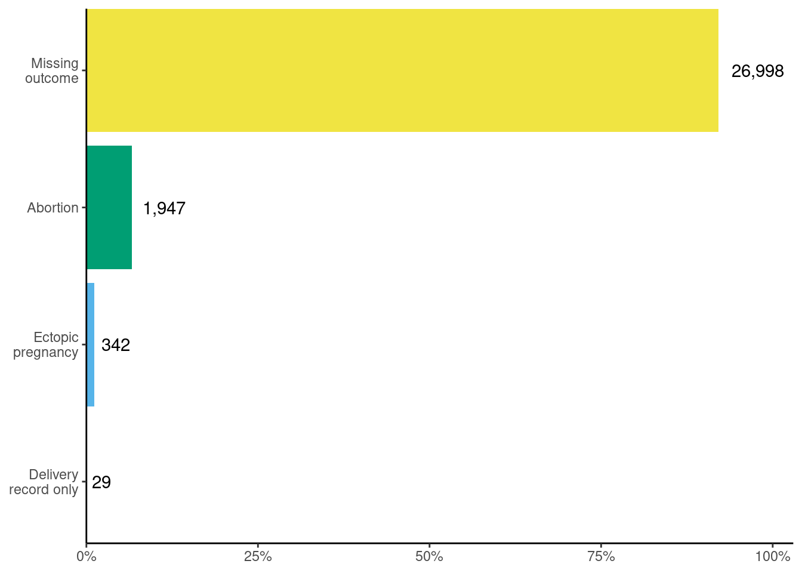
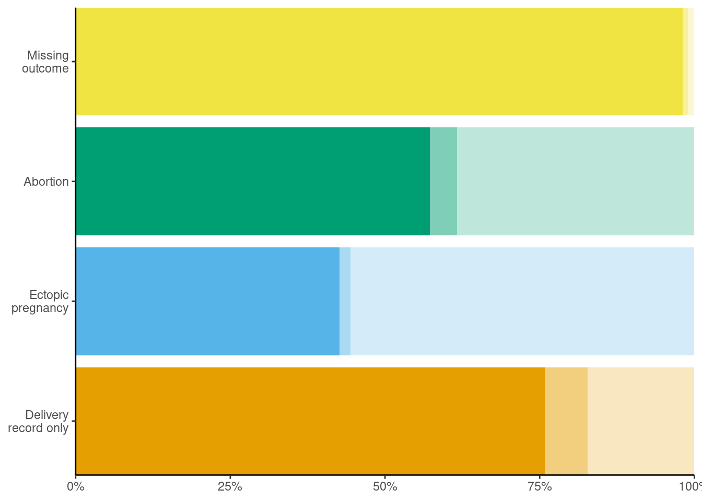

library(allofus)
library(tidyverse)
library(ggokabeito)
library(gtsummary)
theme_set(theme_classic())Look at results of HIPPS algorithm
con <- aou_connect()all <- read_rds(here::here("workbench/merged_episodes_with_metadata_df.rds"))
count(all,
both_algo = inferred_episode_start < inferred_episode_end & HIP_flag == 1 & PPS_flag == 1,
post_2016 = inferred_episode_start >= as.Date("2016-01-01")
)| both_algo | post_2016 | n |
|---|---|---|
| FALSE | FALSE | 20305 |
| FALSE | TRUE | 11999 |
| TRUE | FALSE | 4138 |
| TRUE | TRUE | 29316 |
# restrict
hipps <- all %>%
filter(
inferred_episode_start < inferred_episode_end,
HIP_flag == 1 & PPS_flag == 1,
inferred_episode_start >= as.Date("2016-01-01")
)hipps_w_demo <- read_rds(here::here("workbench/hipps_cleaned.rds")) %>%
filter(
inferred_episode_start < inferred_episode_end,
HIP_flag == 1 & PPS_flag == 1,
inferred_episode_start >= as.Date("2016-01-01")
) %>%
mutate(across(c(state_cat, gender_cat, orientation_cat, race_eth_cat, marital_status_cat), fct_infreq),
across(where(is.factor), fct_drop))nrow(hipps_w_demo)[1] 29316length(unique(hipps_w_demo$person_id))[1] 20668hipps_w_demo %>%
janitor::tabyl(outcome_category)| outcome_category | n | percent |
|---|---|---|
| Missing outcome | 26998 | 0.9209305 |
| Abortion | 1947 | 0.0664142 |
| Ectopic pregnancy | 342 | 0.0116660 |
| Delivery record only | 29 | 0.0009892 |
hipps_w_demo %>%
janitor::tabyl(outcome_category) %>%
mutate(outcome_category = fct_rev(outcome_category)) %>%
ggplot(aes(outcome_category, percent)) +
geom_col(aes(fill = outcome_category)) +
geom_text(aes(label = scales::number(n, big.mark = ",")),
hjust = -.25
) +
scale_fill_okabe_ito() +
scale_y_continuous(labels = scales::percent) +
scale_x_discrete(labels = ~ str_wrap(.x, 13)) +
coord_flip(expand = FALSE, ylim = c(0, 1.03)) +
theme(
legend.position = "none",
axis.title = element_blank()
)
hipps_w_demo %>%
mutate(outcome_concordance_score = fct_rev(factor(outcome_concordance_score))) %>%
janitor::tabyl(outcome_category, outcome_concordance_score) %>%
mutate(across(where(is.numeric), ~ ifelse(.x < 20 & .x > 0, "<20", as.character(.x))))| outcome_category | 2 | 1 | 0 |
|---|---|---|---|
| Missing outcome | 26499 | 219 | 280 |
| Abortion | 1114 | 87 | 746 |
| Ectopic pregnancy | 146 | <20 | 190 |
| Delivery record only | 22 | <20 | <20 |
janitor::tabyl(hipps_w_demo, outcome_concordance_score)| outcome_concordance_score | n | percent |
|---|---|---|
| 0 | 1221 | 0.0416496 |
| 1 | 314 | 0.0107109 |
| 2 | 27781 | 0.9476395 |
hipps_w_demo %>%
mutate(outcome_category = fct_rev(outcome_category)) %>%
ggplot() +
geom_bar(aes(outcome_category,
fill = outcome_category,
alpha = factor(outcome_concordance_score)
), position = "fill") +
scale_alpha_manual(values = c(.25, .5, 1)) +
scale_fill_okabe_ito() +
scale_y_continuous(labels = scales::percent) +
scale_x_discrete(labels = ~ str_wrap(.x, 13)) +
coord_flip(expand = FALSE) +
theme(
legend.position = "none",
axis.title = element_blank()
)
hipps_w_demo %>%
janitor::tabyl(precision_category)| precision_category | n | percent |
|---|---|---|
| month | 740 | 0.0252422 |
| non-specific | 695 | 0.0237072 |
| three-month | 512 | 0.0174649 |
| three-week | 1698 | 0.0579206 |
| two-month | 620 | 0.0211489 |
| two-week | 4599 | 0.1568768 |
| week | 15189 | 0.5181130 |
| week_poor-support | 5263 | 0.1795265 |
hipps_w_demo %>%
mutate(
resolution = case_when(
precision_category %in% c("week", "two-week", "three-week") ~ "Week-level",
precision_category %in% c("month", "two-month", "three-month") ~ "Month-level",
precision_category %in% c("week_poor-support") ~ "Week-level (1 concept)", precision_category %in% c("non-specific") ~ "Non-specific"
),
resolution = fct_relevel(resolution, "Week-level", "Week-level (1 concept)", "Month-level", "Non-specific")
) %>%
count(resolution) %>%
mutate(prop = n / sum(n))| resolution | n | prop |
|---|---|---|
| Week-level | 21486 | 0.7329104 |
| Week-level (1 concept) | 5263 | 0.1795265 |
| Month-level | 1872 | 0.0638559 |
| Non-specific | 695 | 0.0237072 |
hipps_w_demo %>%
group_by(outcome_category) %>%
summarise(mean = mean(gestational_age_days_calculated), median = median(gestational_age_days_calculated), min = min(gestational_age_days_calculated), max = max(gestational_age_days_calculated), q1 = quantile(gestational_age_days_calculated, .01), q99 = quantile(gestational_age_days_calculated, .99)) %>%
mutate(across(where(is.numeric), ~ . / 7))| outcome_category | mean | median | min | max | q1 | q99 |
|---|---|---|---|---|---|---|
| Missing outcome | 33.91296 | 38.00000 | 3.714286 | 87.00000 | 8.00000 | 43.28571 |
| Abortion | 12.63864 | 11.42857 | 2.714286 | 54.00000 | 7.00000 | 37.28571 |
| Ectopic pregnancy | 11.13450 | 10.35714 | 6.000000 | 41.28571 | 7.00000 | 32.98714 |
| Delivery record only | 40.15764 | 38.28571 | 29.142857 | 77.85714 | 30.50286 | 71.17714 |
hipps_cleaned <- hipps_w_demowrite_rds(hipps_cleaned, here::here("workbench/hipps_cleaned_restricted.rds"))
aou_workspace_to_bucket(here::here("workbench/hipps_cleaned_restricted.rds"))Demographics table
demo_table <- hipps_cleaned %>%
distinct(person_id, gender_cat, orientation_cat, race_eth_cat, income_cat, edu_cat, marital_status_cat) %>%
tbl_summary(
include = c(gender_cat, orientation_cat, race_eth_cat, income_cat, edu_cat),
label = list(
gender_cat ~ "Gender identity",
orientation_cat ~ "Sexual orientation",
race_eth_cat ~ "Race/ethnicity",
income_cat ~ "Family income",
edu_cat ~ "Education"
)
) %>%
bold_labels()
demo_table| Characteristic | N = 20,6681 |
|---|---|
| Gender identity | |
| Woman | 20,447 (99%) |
| Other/multiple | 87 (0.4%) |
| Man | 36 (0.2%) |
| Unknown | 98 |
| Sexual orientation | |
| Straight | 18,450 (91%) |
| Bisexual | 1,372 (6.8%) |
| None | 318 (1.6%) |
| Gay/lesbian | 125 (0.6%) |
| Unknown | 403 |
| Race/ethnicity | |
| Hispanic or Latino | 8,541 (42%) |
| White | 6,886 (34%) |
| Black or African-American | 2,970 (15%) |
| More than one race | 767 (3.8%) |
| Asian | 634 (3.1%) |
| AIAN | 288 (1.4%) |
| Other | 181 (0.9%) |
| Middle Eastern or North African | 115 (0.6%) |
| Native Hawaiian or Other Pacific Islander | 39 (0.2%) |
| Unknown | 247 |
| Family income | |
| < 10k | 2,952 (20%) |
| 10-25k | 2,081 (14%) |
| 25-50k | 3,283 (22%) |
| 50-100k | 2,981 (20%) |
| > 100k | 3,564 (24%) |
| Unknown | 5,807 |
| Education | |
| Less than high school | 2,255 (11%) |
| High school graduate | 5,578 (28%) |
| Some college | 5,398 (27%) |
| College graduate | 3,905 (19%) |
| Advanced degree | 3,138 (15%) |
| Unknown | 394 |
| 1 n (%) | |
Live births
preg_table <- hipps_cleaned %>%
filter(outcome_category == "Live birth") %>%
tbl_summary(
include = c(
mom_age_cat_table, year_end_cat, took_the_survey, gestational_age_weeks,
preterm_status_from_calculation
),
label = list(
mom_age_cat_table ~ "Maternal age",
year_end_cat ~ "Year of delivery",
took_the_survey ~ "All of Us participation relative to pregnancy",
gestational_age_weeks ~ "Gestational age at delivery (weeks)",
preterm_status_from_calculation ~ "Preterm (< 37 weeks)"
),
digits = list(gestational_age_weeks ~ c(1))
) %>%
bold_labels()Error in `tbl_summary()`:
! Expecting `data` argument to have at least 1 row and 1 column.preg_tableError in eval(expr, envir, enclos): object 'preg_table' not foundNew combined table
demo_table <- hipps_cleaned %>%
distinct(person_id, gender_cat, orientation_cat, race_eth_cat, income_cat, edu_cat, marital_status_cat, state_cat) %>%
tbl_summary(
include = c(
gender_cat, orientation_cat, race_eth_cat, income_cat, edu_cat,
state_cat
),
label = list(
gender_cat ~ "Gender identity",
orientation_cat ~ "Sexual orientation",
race_eth_cat ~ "Race/ethnicity",
income_cat ~ "Family income",
edu_cat ~ "Education",
state_cat ~ "State of residence"
),
digits = list(everything() ~ c(0, 1))
) %>%
bold_labels()
preg_table <- hipps_cleaned %>%
filter(outcome_category == "Live birth") %>%
mutate(
gender_cat = fct_collapse(gender_cat, "Other/multiple" = c("Other", "Man"))
) %>%
tbl_summary(
include = c(
gender_cat, orientation_cat, race_eth_cat, income_cat, edu_cat,
state_cat,
mom_age_cat_table, year_end_cat, took_the_survey, gestational_age_weeks,
preterm_status_from_calculation
),
label = list(
gender_cat ~ "Gender identity",
orientation_cat ~ "Sexual orientation",
race_eth_cat ~ "Race/ethnicity",
income_cat ~ "Family income",
edu_cat ~ "Education",
state_cat ~ "State of residence",
mom_age_cat_table ~ "Maternal age",
year_end_cat ~ "Year of delivery",
took_the_survey ~ "All of Us participation relative to pregnancy",
gestational_age_weeks ~ "Gestational age at delivery (weeks)",
preterm_status_from_calculation ~ "Preterm (< 37 weeks)"
),
digits = list(everything() ~ c(0, 1))
) %>%
bold_labels()Error in `tbl_summary()`:
! Expecting `data` argument to have at least 1 row and 1 column.combo <- gtsummary::tbl_merge(list(demo_table, preg_table), tab_spanner = c("Individuals", "Live births"))Error in eval(expr, envir, enclos): object 'preg_table' not foundcomboError in eval(expr, envir, enclos): object 'combo' not foundwrite_rds(combo, here::here("workbench/demographics_table.rds"))Error in eval(expr, envir, enclos): object 'combo' not found